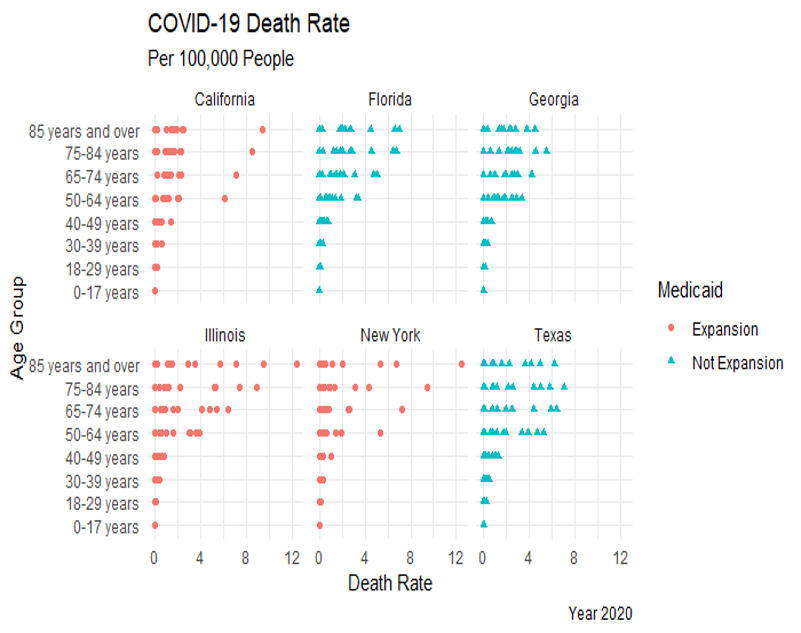
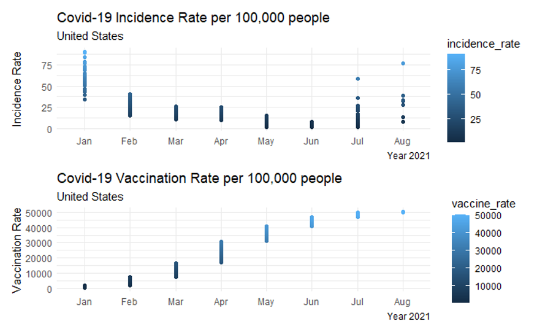

In February 2020, the first case of the novel coronavirus emerged in the U.S, and since then, it has taken the lives of Americans regardless of their race or age group. Due to prevention guidelines and high peak of infections, older Americans faced more barriers to maintaining a high level of mental and physical functioning and maintain an active engagement with life. The age group was also at higher risk for disease and disability due to age-related physiological changes such as decreased cardiac output and impaired gas exchange of the lungs. The primary objectives of this exploratory analysis are to (1) understand the impact of the COVID-19 pandemic in the American population 65 years and older, and (2) understand the challenges and prospects to support older adults in the U.S.
Methods:This analysis was developed using global COVID-19 reports (i.e., retrieved from our World in data) and the 2020 United States Census administrative data. The measures calculated were crude death rate, incidence rate, vaccination rate, and proportionate mortality. The policies evaluated were the COVID-19 vaccine policy and Medicaid Expansion. Data pre-processing and analysis were performed using SAS® and R programming language.
Results and Discussion:Results suggest that Illinois was the state with the highest COVID-19 death rate, 129 deaths per 100,000 people, while New York was the state that presented a lower death rate, 79 deaths per 100,000 people (see Figure 1). The COVID-19 death rate in Georgia and Florida were 96 and 101 deaths per 100,000 people, respectively. The rate of deaths in California was 84 deaths per 100,000. On average, states without Medicaid Expansion presented a COVID-19 mortality rate 6.42% higher than states with expansion. States without Medicaid Expansion presented a crude death rate 13.7% higher than states with expansion. Even though vaccination efforts reduced the spread of the disease and the surge of new cases (see Figure 2), analysis indicates that states without Medicaid Expansion presented a COVID-19 proportionate mortality rate 11% higher than states with expansion. Death rates among older adults are extremely high compared to other age groups. Further research is needed to analyze if exists a causal relationship between Medicaid Expansion and the state’s capability to manage the COVID-19 crisis.
Data SourceCenters for Disease Control and Prevention. (2021). Provisional COVID-19 Deaths by Sex and Age. Retrieved from https://www.cdc.gov/csels/dsepd/ss1978/lesson3/section3.html (60,588 Observations, 15 Variables) Our World in Data. COVID-19-Data. (2021). Retrieved from covid-19-data/public/data at master · owid/covid-19-data · GitHub (107,897 Observations, 60 Variables) United States Census Bureau. April. (2021). 2020 Census Apportionment Results, Table 2 Resident Population for the 50 States, the District of Columbia, and Puerto Rico: 2020 Census”. Retrieved from https://www.census.gov/data/tables/2020/dec/2020-apportionment-data.html. (51 Observations, 6 Variables)
FormulasVaccination rate = number of individuals fully vaccinated recorded in a year /mid interval population * 100,000
Incidence rate = number of new cases recorded in a year /mid interval population * 100,000
Death Rate = number COVID-19 deaths recorded in a year / mid interval population * 100,000
Death Rate = number COVID-19 deaths recorded in a year / mid interval population * 100,000
Proportionate Mortality= number of deaths recorded in a year / Total deaths recorded in same year* 100
NB: This analysis was presented at the Georgia Health Policy Center, US, on 08/12/2021. Access the full R code here.

